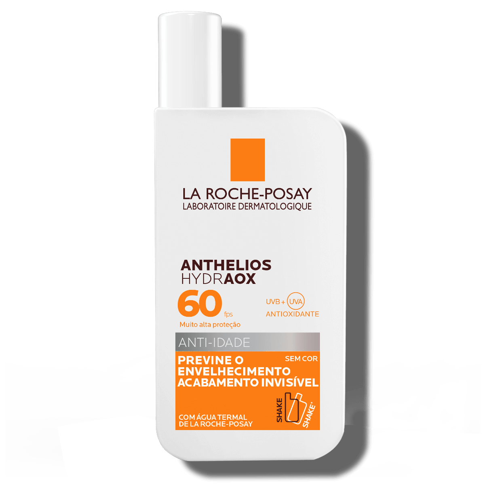
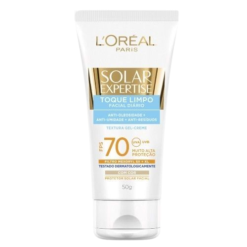

Como a pele reage ao sol
Desvendando o protetor solar
As pessoas com esse tipo de pele não precisam se preocupar com as queimaduras, pois são muito resistentes ao sol devido a excelente pigmentação da pele. Pessoas com características de cabelos escuros e difícil queimadura quando exposta sol possuem esse fototipo de pele. Mesmo assim, é importante usar proteção solar com fator acima de 15 para evitar doenças como o câncer de pele, são indicados protetores com textura em gel e que não esbranquiçam a pele para que não mude a tonalidade da pele após passar o produto.

